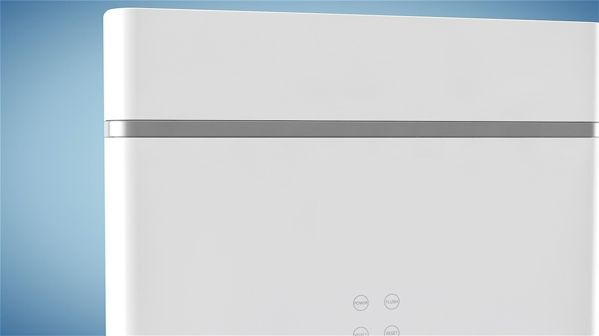
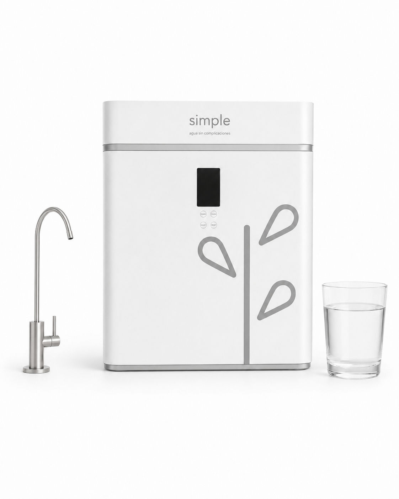
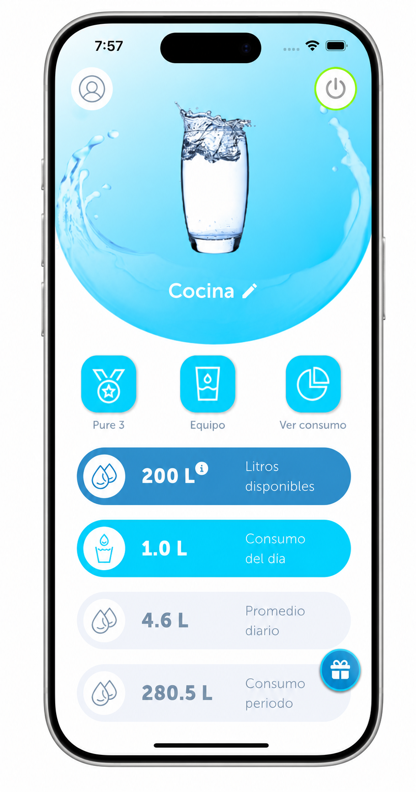
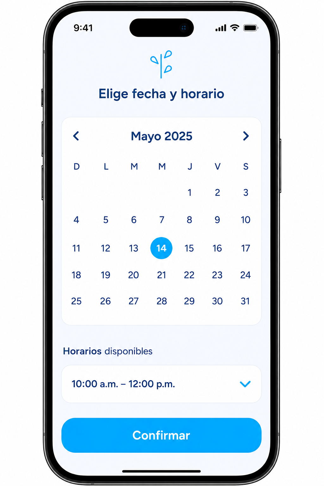

01 · Sedimentos
Retiene partículas suspendidas en el agua de entrada.
El sistema combina filtración en cuatro etapas con tarjeta IoT, app móvil y plataforma interna JASS para dar seguimiento al consumo, al estado operativo y al mantenimiento.

Retiene partículas suspendidas en el agua de entrada.
Ayuda a reducir cloro, olores y materia orgánica.
Filtración avanzada mediante membrana semipermeable.
Etapa final enfocada en sabor y balance del agua.

Se valida el espacio, se coloca el equipo y se confirma funcionamiento.

Sistema compacto instalado en punto de consumo para purificación en sitio.

Consulta consumo, estado del filtro y notificaciones del servicio.

Agenda, soporte y mantenimiento para mantener el servicio activo.
Ecosistema digital desarrollado in-house que integra aplicaciones móviles, plataformas web y sistemas BackOffice para trazabilidad, operación, soporte y gestión del servicio.
El CRM propio permite anticipar mantenimiento, coordinar recambios, centralizar suscripciones, inventario y soporte técnico. Esto ayuda a que la experiencia no dependa sólo del equipo instalado, sino de una operación conectada.